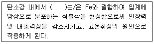
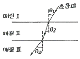

초음파비파괴검사기사 (2020-06-06 기출문제)
1과목: 비파괴검사 개론
1. 셀레늄(Selenium) 등의 반도체 뒤에 금속판을 대고 균일한 전하를 준 후 시험체를 투과한 방사선에 노출되면 방사선의 강도에 따라 반도체의 저항이 작아지고 전하가 이동하여 방전하게 되는데, 여기에 반대 전하를 도포하면 육안으로 확인 가능한 영상이 형성되며 이에 적절한 수지를 도포함으로써 영상을 형성할 수 있다. 이 원리를 이용하는 방법은?
- 건식 방사선 투과검사법(Xeroradiography)
- 전자 방사선 투과검사법(Electron radiography)
- 자동 방사선 투과검사법(Autoradiography)
- 순간 방사선 투과검사법(Flash radiography)
(정답률: 65%)

2. 결함의 유해성에 관한 설명 중 옳은 것은?
- 결함을 가지고 있는 구조물의 강도가 저하하는 양상은 그 결함의 형상과 방향에 따라 다르다.
- 곡면이 있는 결함은 주로 단면적의 감소에 기인하여 강도를 증가시킨다.
- 가늘고 긴 결함은 단면적의 감소 이외에 결함부의 지시 길이에 기인하여 강도를 증가시킨다.
- 표면결함과 내부결함에서 동일종류, 동일치수의 결함이면 내부결함의 경우가 표면결함보다 유해하다.
(정답률: 82%)
3. 비파괴시험 기술자의 임무라 볼 수 없는 것은?
- 시험결과의 정확한 판정
- 제조공정의 철저한 관리
- 제품의 품질보증에 대한 책임
- 시험기술 향상을 위해 꾸준한 노력
(정답률: 82%)
4. 동일 조건에서 모세관의 반지름이 2배로 늘어나면 모세관속 액체의 높이는 어떻게 되는가?
- 1/4로 낮아진다.
- 1/2로 낮아진다.
- 2배로 높아진다.
- 4배로 높아진다.
(정답률: 70%)
5. 다음 중 발(기)포누설검사법(Bubble Trst)에서 소크시간(soak time)에 해당되는 것은?
- 검사용액을 혼합하고 적용하는데 소요되는 시간
- 검사용액을 적용한 후 관찰할 때까지 소요되는 시간
- 가압의 완료 시점과 요액의 적용시점 사이의 시간
- 시험에 소요되는 총 시간
(정답률: 72%)
6. 다음 ()안에 들어갈 원소는?

- Cu
- S
- Mn
- Si
(정답률: 74%)
7. SM45CC의 탄소 함유량은 약 몇 %인가?
- 0.0045
- 0.12
- 0.45
- 1.2
(정답률: 76%)
8. 실루민을 개량처리하는 이유로 옳은 것은?
- 공정점 부근의 주조조직으로 나타나는 Si 결정을 미세화 시키기 위해
- 공정점 부근의 주조조직으로 나타나는 Ai 결정을 미세화 시키기 위해
- 공정점 부근의 주조조직으로 나타나는 Zn 결정을 미세화 시키기 위해
- 공정점 부근의 주조조직으로 나타나는 Sn 결정을 미세화 시키기 위해
(정답률: 74%)
9. 알루미늄 합금의 질별 기호가 잘못 짝지어진 것은?
- O : 어닐링한 것
- H : 가공 경화한 것
- W : 용체화 처리한 것
- F : 용체화 처리 후 자연시효한 것
(정답률: 70%)
10. 다음 합금 중 형상기억 효과가 있는 것은?
- Mn-B
- Co-W
- Cr-Co
- Ti-Ni
(정답률: 76%)
11. Mg 합금에 대한 설명으로 틀린 것은?
- 소성가공성이 높아 상온변형이 쉽다.
- 비강도가 커서 항공기나 자동차 재료 등으로 사용된다.
- 감쇠능이 커서 소음방지 재료로 우수하다.
- 구상 흑연주철의 첨가제로 사용된다.
(정답률: 66%)
12. 다음 중 주석에 대한 설명으로 틀린 것은?
- 화학기호는 Sn이다.
- 상온가공경화가 없으므로 소성가공이 쉽다.
- 비중은 약 10.3이고, 융점은 약 670℃정도이다.
- 무독성이므로 의약품, 식품 등의 포장용, 튜브에 사용된다.
(정답률: 50%)
13. 재료의 정적 파괴응력보다 작은 응력을 장시간 동안 반복적으로 받는 경우에 파괴되는 현상은?
- 마모
- 피로
- 크리프
- 샤르피
(정답률: 76%)
14. 금속의 인장시험 시 측정되는 다음 항목들 중 가장 높은 응력 값을 나타내는 것은?
- 인장 강도
- 항복 강도
- 탄성 강도
- 피로 강도
(정답률: 69%)
15. 순철의 냉각에서 A3 변태에 대한 설명으로 옳은 것은?
- 온도는 약 1410℃이다.
- 부피가 감소하는 변화이다.
- 결정구조의 변화를 수반한다.
- 공정 반응이다.
(정답률: 53%)
16. 용접 작업으로 인하여 발생하는 잔류 응력을 제거하는 방법으로 틀린 것은?
- 솔더링
- 피닝법
- 국부 풀림법
- 저온 응력 완화법
(정답률: 61%)
17. 아크 용접기의 1차측 입력이 20kVA인 경우 가장 적합한 퓨즈의 용량은? (단, 이 용접기의 전원전압은 200V이다.)
- 10A
- 50A
- 100A
- 200A
(정답률: 65%)
18. 다음 중 노치취성 시험방법이 아닌 것은?
- 슈나트 시험
- 코머렐 시험
- 샤르피 시험
- 카안인열 시험
(정답률: 59%)
19. 저수소계 피복 아크 용접봉의 건조온도 및 건조시간으로 다음 중 가장 적합한 것은?
- 100~150℃, 30분
- 200~300℃, 1시간
- 150~200℃, 2시간
- 300~350℃, 1~2시간
(정답률: 48%)
20. 가스 금속 아크 용접에서 용융 금속의 이동 형태가 아닌 것은?
- 단락 이행
- 입상 이행
- 롤러 이행
- 스프레이 이행
(정답률: 58%)
2과목: 초음파탐상검사 원리
21. 음향 임피던스에 관한 설명 중 틀린 것은?
- 음량임피던스의 값은 (음속)×(밀도)로서 표시한다.
- 글리세린의 음향임피던스는 기름의 음향임피던스보다 일반적으로 크다.
- 음향임피던스 차이는 음의 투과 양을 계산하는데 영향이 거의 없다.
- 두 가지 종류의 물질이 접촉했을 때 양자의 음향임피던스가 거의 같으면 밀도에 큰 차가 있어도 음파는 경계면에서 거의 반사하지 않는다.
(정답률: 77%)
22. 초음파탐상시험에서 입사파의 종파 굴절각이 90°가 되는 경우 이 때의 입사각을 무엇이라 하는가?
- 입사각이 90°라는 의미와 상응한다.
- 제1임계각을 의미한다.
- 제1굴적각을 의미한다.
- 입사각과 반사각이 일치하지 않은 각도를 말한다.
(정답률: 77%)
23. 탐촉자의 표시가 5Z10×20ND일 때 D의 뜻은?
- 가변각형
- 수침형
- 2진동자형
- 판파형
(정답률: 70%)
24. 초음파의 지향각은 매체를 통과하는 초음파의 파장과 진동자의 크기에 따른 함수로써 다음 설명 중 옳은 것은?
- 주파수가 증가하고, 진동자의 크기가 감소하면 지향각은 항상 작아진다.
- 주파수가 증가하고, 진동자의 크기가 감소하면 지향각은 항상 커진다.
- 주파수와 진동자의 크기가 모두 감소하면 지향각은 작아진다.
- 주파수와 진동자의 크기가 모두 감소하면 지향각은 커진다.
(정답률: 43%)
25. 다음 중 초음파의 특성을 잘못 기술한 것은?
- 진공상태에서도 전달된다.
- 탐촉자의 재질과 초음파의 속도는 무관하다.
- 탐촉자의 크기와 속도는 무관하다.
- 탐촉자의 진동자 두께와 속도는 무관하다.
(정답률: 63%)
26. 강에 굴절각 45° 탐촉자 wedge를 설계하고자 한다면 시험재 표면과 wedge가 이루는 각(θ1은 얼마로 하여야 하겠는가? (단, wedge 내에서의 속도=2730m/sec, 강에서의 속도 : 종파=5900m/sec, 횡파=3230m/sec이다.0
- 36.7°
- 39.7°
- 26.4°
- 23.4°
(정답률: 50%)
27. 검사체 내에서 음파의 전파 특성에 영향을 주는 것이 아닌 것은?
- 검사체 재질의 밀도
- 검사체 재질의 탄성계수
- 검사체 재질 내에서의 초음파 속도
- 검사체의 무게
(정답률: 82%)
28. 초음파현미경(Scanning Acoustic Microscope:SAM)에 대한 설명 중 틀린 것은?
- 표면 및 내부의 미세한 탄성적인 정보를 알 수 있다.
- 주로 200MHz~1GHz 정도의 고주파수가 사용된다.
- 음향렌즈로 초음파 빔을 접속시켜 시험체에 입사시킨다.
- 누설탄성표면파를 발생시킬 수 있다.
(정답률: 40%)
29. 다음의 진동자 종류 중 수신효율이 가장 우수한 것은?
- 티탄산바륨
- 황산리튬
- 수정
- 니오비움산납
(정답률: 61%)
30. 다음 중에서 초음파의 굴절각에 영향을 주지 않는 것은? (단, 이때의 굴절각은 매질Ⅲ에서의 굴절각을 말한다.)

- 매질 Ⅰ의 재질
- 매질 Ⅱ의 재질
- 매질 Ⅲ의 재질
- 매질 Ⅰ, Ⅱ, Ⅲ 모두 영향이 있다.
(정답률: 62%)
31. 30mm두께의 맞대기용접부를 굴절각 60°의 탐촉자로 탐상하여 스크린(Sound path)상에 90mm거리에서 결함지시가 나타났다. 이 결함의 깊이는 얼마인가?
- 5mm
- 10mm
- 15mm
- 20mm
(정답률: 65%)
32. 다음 중 압전효과가 나타나지 않는 물질은?
- 황산리튬
- 티탄산바륨
- 수정
- A-니켈
(정답률: 80%)
33. 다음 시험체 중 판파를 적용하여 검사 가능한 대상물은?
- 강괴
- 단조품
- 박판재
- 원형 제품
(정답률: 80%)
34. 음파의 감쇠 원인 중 접촉매질과 피검체의 표면거칠기로 인하여 발생하는 것은?
- 전달손실
- 감쇠손실
- 회절손실
- 간섭손실
(정답률: 65%)
35. 초음파의 음압은 다음 중 무엇에 의해 결정되는가?
- 진폭
- 속도
- 파장
- 주파수
(정답률: 38%)
36. 초음파탐상검사에 사용되는 시험편에 관한 설명으로 틀린 것은?
- STB-A1 표준시험편과 IIW 시험편은 기본적으로 동일한 규격을 갖는다.
- STB-A1과 A2 시험편을 조합하여 만든 STB-A3 시험편은 이동이 편리하다.
- STB-G 시험편은 경사각탐상의 감도조정 및 탐촉자의 성능시험에 사용된다.
- RB-4 대비시험편은 사각 및 수직탐상의 거리 진폭 특성곡선 작성에 사용된다.
(정답률: 68%)
37. 초음파탐상시험 시 스킵(skip)거리는 무엇에 의해 결정되는가?
- 회절각
- 펄스폭
- 주파수
- 입사각
(정답률: 74%)
38. 표면이 거친 부품을 초음파탐상검사를 할 경우 만족할 만한 시험효과를 얻기 위하여 일반적으로 표면이 매끈한 부품에 사용하는 경우와 비교한 설명으로 옳은 것은?
- 더 낮은 주파수의 탐촉자와 점성이 높은 접촉 매질을 사용한다.
- 더 높은 주파수의 탐촉자와 점성이 높은 접촉 매질을 사용한다.
- 더 높은 주파수의 탐촉자와 점성이 낮은 접촉 매질을 사용한다.
- 더 낮은 주파수의 탐촉자와 점성이 낮은 접촉 매질을 사용한다.
(정답률: 68%)
39. 초음파탐상검사의 장점이 아닌 것은?
- 검사결과를 신속히 알 수 있다.
- 표준시험편 및 대비시험편이 필요하다.
- 전파능력이 우수하다.
- 균열 등 면상결함에 대한 감도가 높다.
(정답률: 64%)
40. 음향임피던스가 동일한 재질에 수직 입사된 초음파의 음압 반사율로 올바른 것은?
- 0%
- 10%
- 90%
- 100%
(정답률: 67%)
3과목: 초음파탐상검사 시험
41. 초음파 탐상기의 CRT 스크린 상에 나타나는 에코의 높이는 다음 중 무엇에 비례하는가?
- 음의 압력
- 음의 주파수
- 음향 임피던스
- 음의 속도
(정답률: 59%)
42. 초음파탐상시험에서 거리 또는 방향이 다른 근접한 2개의 반사원으로부터 에코를 충분히 분리하여 식별하기 위하여 사용할 수 있는 방법으로 틀린 것은?
- 초음파탐상기의 수신부가 증폭하는 주파수대역을 가능한 좁게 한다.
- 높은 주파수의 초음파를 발생하는 탐촉자를 사용한다.
- 광대역탐촉자를 사용한다.
- 댐핑이 양호한 탐촉자를 사용한다.
(정답률: 40%)
43. 후판 용접부의 경사각탐상의 경우 2개의 경사각 탐촉자를 용접부의 한쪽에서 전후로 전후하여 하나는 송신용, 하나는 수신용으로 하는 탐상방법은?
- 탠덤 주사
- 지그재그 주사
- 경사평행 주사
- 전후 주사
(정답률: 80%)
44. 다음 중 경사각 탐상시의 탐상감도 조정에 사용할 수 없는 시험편은?
- IIW
- STB-A3
- STB-G-V5
- RB-A6
(정답률: 61%)
45. 일반적으로 경사각탐촉자의 각도 표시는 어떻게 하는가?
- 횡파가 발생했을 때의 반사각을 표시
- 종파가 발생했을 때의 굴절각을 표시
- 발생한 횡파의 굴절각을 표시
- 발생한 종파의 반사각을 표시
(정답률: 72%)
46. 초음파검사 수행 시 탐촉자의 직경은 동일하나, 주파수가 큰 것으로 변경하면 예상되는 결과는 어떻게 되는가?
- 근거리 음장의 길이가 감소한다.
- 근거리 음장의 길이가 증가한다.
- 빔의 분산이 증가한다.
- 인접한 결함의 분리탐지능력은 변함없다.
(정답률: 62%)
47. 다음 중에서 STB-A3시험편으로 측정이 곤란환 항목은?
- 시간축의 측정범위 조정
- 수직탐촉자의 분해능 점검
- 사각탐촉자의 입사점 측정
- 사각탐촉자의 굴절각 측정
(정답률: 69%)
48. 다음은 STB-G 표준시험편에 대한 설명이다. 틀린 것은?
- 수직 탐상용이다.
- 수직탐상의 감도 조정에 쓰인다.
- 인공결함은 평저공(Flat bottom hole : FBH)으로 되어 있다.
- 단면 60×60mm와 40mm×40mm의 두 종류로 구성되어 있다.
(정답률: 49%)
49. 다음 중 초음파탐상 방법에 대한 설명 중 틀린 것은?
- CRT횡축상의 에코위치로부터 그 반사면의 위치를 추정하는 것이 가능하다.
- CRT상의 결함 에코높이로부터 결함의 크기를 추정할 수 있다.
- 펄스를 사용하기 때문에 반사체의 형상을 잘 알 수 있다.
- 수직탐상에서는 라미네이션은 잘 검출되지만 작은 블로홀은 잘 검출되지 않을 수 있다.
(정답률: 61%)
50. 초음파 결함평가시 수행하는 dB drop법에 대한 특징으로 틀린 것은?
- 전달손실이나 감쇠의 영향을 받지 않는 장점이 있다.
- 측정값이 절대치를 기준하므로 검사자의 주관이 개제되기 어렵다는 장점이 있다.
- 결함에코 높이의 영향을 받지 않는 특징이 있다.
- 자동탐상에 적용하기 어려운 단점이 있다.
(정답률: 40%)
51. 용접부의 경사각 탐상 시 개선면의 루트(Root)부의 결함인 용입부족을 쉽게 검출할 수 있는 주사 방법은?
- V 주사법
- M 주사법
- 탠덤 주사법
- 투과주사법
(정답률: 42%)
52. 초음파탐상검사 시 표시방법에 해당하지 않는 것은?
- G-Scope
- C-Seope
- B-Scope
- A-Scope
(정답률: 70%)
53. 오스테나이트계 스테인리스강 용접부는 초음파검사가 곤란한 경우가 많다. 이에 대한 설명으로 틀린 것은?
- 초음파의 감쇠가 많고 임상에코가 많이 나타나서 초음파검사 적용이 어렵다.
- 용접 시 응고한 주상정이 단결정이어서 음속과 감쇠의 이방성을 나타나므로 초음파 진행에 영향을 준다.
- 결정입의 직경이 작게 되면 감쇠가 현저히 증가하고, 고주파수의 적용이 유리하다.
- 결함에코를 강조하고 임상에코를 억제하는 방법을 사용하여 신호대 잡음비를 향상시키는 노력이 필요하다.
(정답률: 67%)
54. 강용접부 모재의 두께가 15mm인 맞대기 용접부 검사에 일반적으로 가장 많이 사용되는 초음파탐상 시험법은?
- 공진법
- 수직 탐상법
- 경사각 탐상법
- 표면파 탐상법
(정답률: 75%)
55. 펄스반사법 초음파탐상장치를 사용하여 어떤 결함으로부터 에코 높이가 눈금판 높이의 50%에 위치하였다. 이 에코 높이를 눈금판의 100%로 조정하려면 어떻게 장비를 조정해야 하는가?
- 게인 조절기를 올린다.
- 게인 조절기를 내린다.
- 소연지연(sweep delay) 조절기를 올린다.
- 소연지연(sweep delay) 조절기를 내린다.
(정답률: 73%)
56. 다음 시험편 중 경사각탐촉자의 거리진폭특성곡선을 작성하는데 일반적으로 사용되지 않는 것은?
- RB-4블럭
- STB-A2 블럭
- IIW-1형 블럭
- ASME Basic Calibration 블럭
(정답률: 63%)
57. 초음파 빔은 매질을 진행함에 따라 강도가 낮아진다. 이에 대한 설명 중 틀린 것은?
- 초음파가 진행하는 매질이 완벽하게 균일하지 못하기 때문에 산란이 발생한다.
- 초음파가 진행함에 따라 초음파 에너지가 열로 변환되어 흡수가 일어난다.
- 접촉 매질과 시험체의 표면거칠기로 인해 전달손실이 생긴다.
- 초음파 빔이 매질을 진행할 때 유도전류가 발생하여 파의 진행을 방해한다.
(정답률: 40%)
58. 초음파탐상시험 시 사용하는 표준시험편의 사용목적으로 적절하지 않은 것은?
- 결함의 종류를 분류하기 위하여 사용한다.
- 탐상장치의 작동특성을 알아보기 위해 사용한다.
- 탐상조건을 설정하기 위해 사용한다.
- 결함에코의 높이와 위치를 비교 평가하기 위해 사용한다.
(정답률: 58%)
59. 다음 중 판재를 경사각 초음파탐상으로 검사할 때 가장 검출하기 어려운 결함은?
- 방향이 불규칙한 개재물
- 작은 불연속이 군집된 기공
- 초음파 방향과 평행한 라미네이션
- 초음파 빔에 수직으로 존재하는 균열
(정답률: 69%)
60. 초음파탐상을 수행할 때, 모든 검사조건을 동일하게 하고 탐촉자의 직경이 작은 것을 사용하게 되면 빔은 어떻게 변화하나?
- 빔에 미치는 영향은 없다.
- 빔의 분산이 작게 된다.
- 빔의 분산이 크게 된다.
- 빔의 분산이 불규칙하게 변화한다.
(정답률: 59%)
4과목: 초음파탐상검사 규격
61. 압력용기용 강판의 초음파탐상 검사방법(KS D 0233)에서 탐촉자의 공칭 주파수가 5MHz일 때, 원거리 분해능으로 옳은 것은?
- 3mm 이하
- 5mm 이하
- 7mm 이하
- 9mm 이하
(정답률: 24%)
62. 강 용접부의 초음파탐상 시험방법(KS B 0896)의 경사각 탐촉자의 성능 점검주기에서 입사점, 탐상 굴절각, 탐상감도 등의 작업시간은 몇 시간 간격으로 점검하는가?
- 4시간
- 5시간
- 6시간
- 8시간
(정답률: 64%)
63. 초음파탐상 시험용 표준시험편(KS B 0831)에 의거 G형 STB시험편 합격여부의 판정을 위한 시험편 반사원 에코 높이를 측정할 때 검정용 표준시험편에서 정한 기준 값의 범위는? (단, 시험주파수 2MHz의 경우이다.)
- ±0.5dB
- ±1dB
- ±1.5dB
- ±2dB
(정답률: 48%)
64. 보일러 및 압력용기에 대한 초음파탐상검사(ASME Sec. V Art.4)에 의한 탐상 시 거리진폭특성곡선을 작성하여 검사를 수행하던 중 검사원이 변경되어 교정 점검할 때 거리진폭특성곡선이 유효 거리진폭특성곡선과 비교한 결과 DAC 상의 한 점이 시간축 값의 20%를 초과하였다. 다음 중 어떤 조치가 필요한가?
- 교정 점검에 사용된 장비와 연관된 모든 검사 데이터를 전부 무효로 해야 한다.
- 교정 점검 전 기록은 유효 처리하고, 새로 교정하여 검사를 계속 수행한다.
- 최종 유효교정까지의 시험결과는 인정하고 유효 교정 후 기록은 모두 확인 및 점검하고 수정한다.
- 교정 점검에 사용된 장비와 연관된 모든 결함기록을 확인 및 점검하고 기록 확인된 수치를 수정한다.
(정답률: 50%)
65. 보일러 및 압력용기에 대한 표준초음파탐상검사(ASME Sev Art.4)에서 니켈합금강을 검사할 때 접촉매질에서 고려해야 할 불순물 및 허용 기준은?
- 염소 함유량 250ppm 이하
- 염소 함유량 500ppm 이하
- 황 함유량 250ppm 이하
- 황 함유량 500ppm 이하
(정답률: 56%)
66. 보일러 및 압력용기에 대한 표준초음파탐상검사(ASME Sev Art.4)에서 용접부에 대한 초음파탐상시험할 때 주사감도는 기준감도 보다 최소 몇 dB 높게 해야 하는가?
- 6dB
- 12dB
- 14dB
- 18dB
(정답률: 54%)
67. d보일러 및 압력용기에 대한 표준초음파탐상검사(ASME Sev Art.5)에 따라 튜브류를 탐상 시 사용하는 교정시험편의 교정 반사체(calibration reflectors)에 관한 내용으로 틀린 것은?
- 형태는 축방향 노치(notch)이다.
- 폭은 약 1.5mm 이하이어야 한다.
- 길이는 약 1인치 또는 그 이하이다.
- 깊이는 약 0.1mm 또는 공칭벽 두께의 5% 중 큰 쪽을 초과하여야 한다.
(정답률: 39%)
68. 보일러 및 압력용기에 대한 표준초음파탐상검사(ASME Sev Art.4)에서 교정시험편을 사용할 때 반드시 곡면시험편을 사용하는 경우로 옳은 것은?
- 검사체의 직경이 508mm(20인치)를 초과할 때
- 검사체의 직경이 508mm(20인치)를 이하일 때
- 검사체의 직경이 762mm(30인치)를 초과할 때
- 검사체의 직경이 762mm(30인치)를 이하일 때
(정답률: 58%)
69. 강 용접부의 초음파탐상 시험방법(KS B 0896)에 의한 경사각탐상에서 초음파탐상장치의 점검항목과 사용 표준시험편이 잘못 짝지어진 것은?
- 굴절각의 측정-STB A1
- 에코높이 구분선 작성-STB A3
- 측정범위의 조정-STB A1
- 입사점의 측정-STB A3
(정답률: 58%)
70. 강 용접부의 초음파탐상 시험방법(KS B 0896) 부속서F(시험 결과의 분류방법)에 따라 판두께 20mm인 강 용접부의 시험 결과를 분류할 때, M검출 레벨의 경우 흠 에코 높이의 영역이 Ⅲ이고, 지시길이가 9mm이면 2류로 분류된다. 만약 지시길이는 변함이 없으나 홈 에코 높이의 영역이 Ⅳ로 바뀌었다면 흠의 분류는?
- 1류
- 2류
- 3류
- 4류
(정답률: 47%)
71. 강 용접부의 초음파탐상 시험방법(KS B 0896)에서 수직탐상이 에코높이 구분선 작성 시 PB-4 두께가 125mm일 경우 각 면에서 최대 에코의 피크위치가 나타나는 표준원과 탐촉자의 거리가 아닌 것은?
- 31mm
- 94mm
- 125mm
- 156mm
(정답률: 48%)
72. 알루미늄의 맞대기용접부의 초음파경사각탐상시험방법(KS B 0897)에서 탐상기의 사용조건 중 증폭직선성의 측정 허용범위는?
- ±1%
- ±2%
- ±3%
- ±5%
(정답률: 45%)
73. 알루미늄의 맞대기용접부의 초음파경사각탐상시험방법(KS B 0897)에서 사용되는 시험 주파수의 범위는?
- 1.5~2.5MHz
- 2.5~3.5MHz
- 3.5~4.5MHz
- 4.5~5.5MHz
(정답률: 46%)
74. 알루미늄의 맞대기용접부의 초음파경사각탐상시험방법(KS B 0897)에서 탐상장치의 사용조건에 대한 설명이 잘못된 것은?
- 공칭굴절각과 탐상굴절각과의 차는 ±2°로 한다.
- 탐촉자의 공칭주파수는 5MHz로 한다.
- 증폭 직선성은 ±3%로 한다.
- 탐상기의 시간축 직선성은 ±2%로 한다.
(정답률: 39%)
75. 강관의 초음파탐상검사 방법(KS D 0250)에서 탐상감도의 확인에 대한 설명으로 틀린 것은?
- 검사작업이 연속적이지 않을 경우 일반적으로 8시간마다 감도를 확인해야 한다.
- 감도는 기준 감도로부터 적어도 ±3dB 내로 유지되고 있다는 것을 확인해야 한다.
- 탐상감도가 기준범위를 초과하여 올라가는 경우, 적절한 기록들을 이용하여 관 각각의 판정이 가능한 경우에는 재검사를 하지 않아도 된다.
- 탐상감도가 기준 범위를 초과하여 낮아지는 경우, 관 각각의 합격/불합격이 명확한 경우에는 합격이라고 생각되어지는 관만 재검사해도 좋다.
(정답률: 40%)
76. 보일러 및 압력용기에 대한 초음파탐상검사(ASME Sec.V Art.4)의 규정사항으로 옳지 않은 것은?
- 1~5MHz 사이의 주파수에 작동할 수 있는 탐상장비여야 한다.
- 일반적인 탐촉자 이동속도는 150mm/s를 초과해서는 안 된다.
- 접촉법에서 교정시험편과 검사표면간의 온도차는 20℃ 이내이어야 한다.
- 주사감도 레벨은 기준 레벨 설정값보다 최소 6dB 높게 설정되어야 한다.
(정답률: 61%)
77. 강 용접부의 초음파탐상 시험방법(KS B 0896)의 부속서 B(원둘레 이음 용접부의 탐상방법)에 따라 두께 15mm. 곡률 반지름이 100mm인 강관의 원둘렝이음 용접부를 탐상하려 한다. 다음 중 옳은 것은?
- 대비 시험편의 곡률 반지름은 시험체 곡률 반지름의 1.6배 이상으로 한다.
- 탐상감도 조정은 RB-4을 사용한다.
- 탐촉자의 접촉면은 시험체의 곡률에 맞추어야 한다.
- 사용하는 탐촉자의 공칭 굴절각은 60°, 45°를 사용한다.
(정답률: 49%)
78. 보일러 및 압력용기에 대한 표준초음파탐상검사(ASME Sec. V, Art.23 SB-548)에서 완전하게 저면반사의 완전감쇠(95% 이상)를 만드는 불연속부를 나타내는 범위가 얼마를 초과하면 그 판을 불합격으로 하는가?
- 1인치
- 1.5인치
- 2인치
- 2.5인치
(정답률: 50%)
79. 강 용접부의 초음파탐상 시험방법(KS B 0896)에 따른 탐상기에 필요한 기능이 아닌 것은?
- 1탐촉자법, 2탐촉자법 중 어느 것에도 사용할 수 있는 것
- 2MHz 및 5MHz의 주파수로 동작하는 것
- 게인 조정기는 1스텝 2dB 이하에서, 합계 조정량은 50dB 이상을 가진 것
- 검사 기록이 자동으로 기록되는 것
(정답률: 55%)
80. 금속재료의 펄스반사법에 따른 초음파탐상시험방법 통칙(KS B 0817)에 따른 탐상범위를 결정하는데 고려할 사항이 아닌 것은?
- 검출하여야 하는 흠집의 종류
- 검출하여야 하는 흠집의 방향
- 검출하여야 하는 흠집의 발생 원인
- 검출하여야 하는 흠집의 위치
(정답률: 79%)